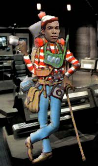

|
Mayweather,
quem?
por Luiz
Castanheira
Mayweather continua sem concorrentes para se afirmar como o "Harry Kim de
Enterprise", o que vem preocupando a todos os trekkers, at mesmo os fs mais devotos
da srie, os Enterprisers.
A situao se tornou ainda mais dramtica depois que o "pequeno quarteto" da
Srie Clssica (Takei, Doohan, Koenig e Nichols) entrou com um processo conjunto contra a Paramount, por ter ousado criar um personagem com menos falas (e menos desenvolvido) do que os deles.
Em tempo: Correm boatos de que Nichols estaria deixando tal "ao" em troca de um acordo com a Paramount para a produo de um musical para a terceira idade (intitulado provisoriamente de "Beyond Uhura: The Musical!"). Existe tambm a possibilidade de ela aparecer em um prximo episdio de
Enterprise.
 Mas a proverbial "gota d'gua" veio quando da ao movida pelo mitolgico personagem "Waldo" (conhecido no Brasil como Wally), diretamente contra Anthony Montgomery, acusando o ator de roubar a sua caracterizao. "Waldo" afirma que no via tamanho desaforo desde quando "Elvira" tentou roubar o personagem de "Vampira" e no conseguiu. O alter-ego de Mayweather no quis comentar nada, seguindo o conselho de seus advogados.
Dentro desse cenrio catico, a dupla B&B teria formulado (os rumores ainda no foram confirmados, por favor) algumas possveis plataformas de lanamento (em supostos episdios especiais) para uma "redeno" do personagem. Essas so algumas das suas supostas idias que j vazaram para a Internet (elas so completamente contraditrias e os tempos verbais no batem muito bem -- provavelmente resultado de mais uma anomalia temporal do Braga):
"The Horizon's Family":
Travis vive uma aventura solo com a sua famlia a bordo da nave Horizon, enquanto a Enterprise volta para reparos na Terra (aps os eventos de um futuro episdio duplo, teoricamente tambm em planejamento pela dupla B&B: "The Worst Of All Worlds"). Sua me ser vivida por Nichele Nichols (convidada a participar pela dupla B&B como parte do acordo do processo citado acima) e seu pai por Louis Gasset Jr. (que espero que ainda esteja vivo), que vai transform-lo em um oficial e em um cavaleiro, custe o que custar. Seu meio-irmo ausente vai ser vivido por uma foto fazendo careta de Cris Rock. A aventura os leva a Sigma Iotia, e termina com Mayweather deixando "aquele" livro de gngsters para trs (ver
"A Piece of the Action", e que se dane a continuidade). Travis gosta tanto da aventura que permanece na Horizon, virando um personagem recorrente na srie
Enterprise. Por ora o seu posto na Enterprise ser ocupado pelo seu meio-irmo ausente, vivido agora, por restries contratuais, por uma foto fazendo careta e de costas de Martin Lawrence (Oh Boy!).
"The Doomsday Cigar":
No primeiro episdio de paradoxos temporais da srie, a Enterprise de Archer encontra a Protector (a nave do filme "Galaxy Quest") e tem que unir foras com a tripulao de Taggart para salvar um terceiro universo paralelo da extino. O inimigo a ser detido: um gigantesco aniquilador de planetas interpretado por um charuto cubano aceso ("No usamos CGI para o aniquilador, foi tudo feito com fotografia de modelos", diz um orgulhoso Rick Berman). Um ataque inicial deixa a Enterprise bastante avariada e a sua tripulao tem que se abrigar na Protector para formular um novo plano. Eles deixam para trs um ferido Mayweather, que, com a ajuda de Porthos e de Eddie (o cachorro de "Frasier", em uma participao especial), consegue bolar um plano "original" de colocar os motores da nave em sobrecarga e enterr-la "fumo adentro" do "aniquilador", explodindo-o. O plano tem sucesso e a cachorrada se salva no ltimo momento, mas Mayweather no tem a mesma sorte (Snif! Snif!). Archer recebe uma nova nave, que batizada de forma "original" de "Rio de Janeiro", que ele pode mudar para Enterprise (suspense)... NX-01 (suspense)... A. S que, em homenagem a Travis, nenhum outro oficial do leme poder dizer mais que sete frases por episdio e nem se sentar na cadeira do capito. Toda esta aventura temporal deu origem a uma nova criao do "Chef" (Isaac Hayes em uma participao especial), um novo tipo de po, batizado de "Braguete".
(A dupla B&B aposta no funeral de Mayweather para alavancar a audincia da srie.)
"Far Closer Than All Those Same Stars":
Penalizados com a situao desesperadora de Mayweather, que no consegue falar mais do que cinco palavras por episdio, os Profetas de Bajor enviam uma viso em que ele um corredor de F-1 negro dos anos 80, de nome Trey Hustler, que corre para uma equipe, pasmem, de nome Enterprise, formada por pessoas, pasmem, "parecidas" com os seus companheiros de tripulao. Outros pilotos vo ser facilmente reconhecidos pela audincia como "parecidos" com Sulu, Paris (com direito a algum "parecida" com a Torres como mecnica) e mesmo Ro Laren e Jadzia Dax, essas ltimas vestindo apenas o capacete e um fio dental. Temos tambm participaes do "mundo real" como Ayrton Senna (vivido por um mexicano com um sotaque terrvel) e Alain Prost vivido por um ssia portugus de Gerard Depardieu, com direito a um nariz aperfeioado por CGI. Trey termina em ltimo lugar e perde o patrocnio, enquanto os seus colegas de equipe conseguem todos belos empregos em Holywood com polpudos salrios. Travis acorda e percebe finalmente que o seu lugar no a bordo da Enterprise e pede transferncia para a Academia da Frota Estelar, onde faz histria como instrutor, influenciando posteriores geraes de exploradores espaciais (como Wesley Crusher e Harry Kim, entre tantos outros).
"Nearscape":
Neste episdio, Travis seria substitudo por um animatronic e jogado pela comporta de ar mais prxima (sem direito a explicaes de espcie alguma, funeral ou mesmo um "reset-button"). O novo piloto (de nome "Navigator", "Gator" para os mais ntimos) tem caractersticas reptileanas que mesmo T'Pol acha "interessantes" (Hoshi fica to excitada com a presena de "Gator" que no consegue entender o que ele fala, apesar de ele falar um ingls perfeito, sem sotaque e fluente). O nico problema que com a instalao de "Gator", a Enterprise comea a mutar e a ganhar vida. Rapidamente T'Pol identifica que a Enterprise est grvida e logo tem incio a procura por um pai. Finalmente Phlox identifica DNA canino no plasma de propulso da nave, o que denuncia o culpado. Doze minutos depois ( o que faltava para o episdio acabar) nasce um bizarro cruzamento de beagle com nave estelar, que logo descarrega a sua "nacele" em um cruzador Klingon que estava convenientemente espreita prximo, no interior de uma nebulosa da classe Mutara, dando incio a anos de hostilidade com o Imprio.
"Where's Mister Mayweather":
Ele substitudo (sem maiores explicaes) por uma verso automtica de piloto de nave estelar, o "Mach5", que pode recriar holograficamente (dane-se a continuidade) vrias imagens de "pilotos" famosos, incluindo a de Morgan Freeman (o que levar posteriormente ao episdio "Driving Miss Enterprise", tambm em planejamento). Travis ento enviado de volta Terra, para ser estudado por um cientista maluco e bem-relacionado (Dr. Frasier, em uma participao especial de Kelsey Grammer) que tenta descobrir o porqu do sorriso idiota do alferes. Da incapacidade em realizar tal objetivo, tal cientista funda a Seo 31, para evitar que a humanidade cometa outro erro (Mayweather) desta magnitude. De fato o nmero "31" se refere estimativa otimista do nmero mdio de palavras que Mayweather pronuncia por episdio. O desaparecimento de Mayweather permanece um mistrio para a tripulao da Enterprise.
(A dupla B&B acha que tal mistrio pode popularizar o alferes e um retorno do personagem em um futuro prximo poderia ento ser benfico srie. Fs j especulam que Mayweather pode ser o prprio "cara do futuro", em um plano para se vingar de Frasier e da Seo 31.) |